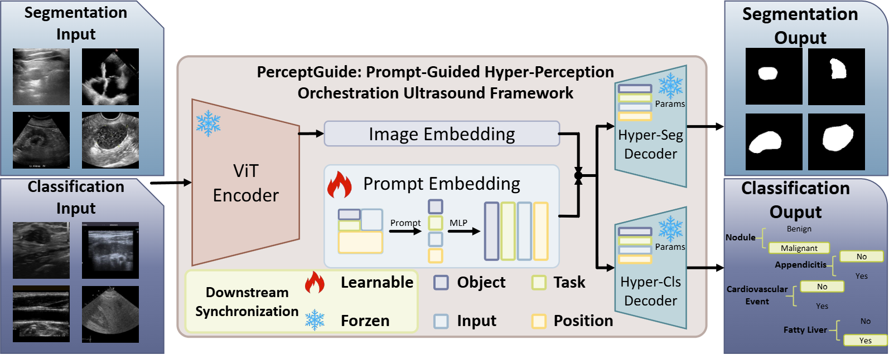

1Faculty of Applied Sciences, Macao Polytechnic
University
2Department of Biomedical Engineering and the Department of Computer and Data Science, Case Western Reserve University
3Paul C. Lauterbur Research Center for Biomedical Imaging, Shenzhen Institute of Advanced Technology, Chinese Academy of Sciences
4School of Biomedical Engineering,
Sun Yat-sen University
5Shenzhen RayShape Medical Technology Co. Ltd.
6School of Biomedical Engineering, Shenzhen
University
Abstract
Ultrasound imaging is pivotal in clinical diagnostics due to its affordability, portability, safety, real-time capability, and non-invasive nature. It is widely utilized for examining various organs, such as the breast, thyroid, ovary, cardiac, and more. However, the manual interpretation and annotation of ultrasound images are time-consuming and prone to variability among physicians. While single-task artificial intelligence (AI) solutions have been explored, they are not ideal for scaling AI applications in medical imaging. Foundation models, although a trending solution, often struggle with real-world medical datasets due to factors such as noise, variability, and the incapability of flexibly aligning prior knowledge with task adaptation. To address these limitations, we propose an orchestration learning framework named PerceptGuide for general-purpose ultrasound classification and segmentation. Our framework incorporates a novel orchestration mechanism based on prompted hyper-perception, which adapts to the diverse inductive biases required by different ultrasound datasets. Unlike self-supervised pre-trained models, which require extensive fine-tuning, our approach leverages supervised pre-training to directly capture task-relevant features, providing a stronger foundation for multi-task and multi-organ ultrasound imaging. To support this research, we compiled a large-scale Multi-task, Multi-organ public ultrasound dataset (M
-US), featuring images from 9 organs and 16 datasets, encompassing both classification and segmentation tasks. Our approach employs four specific prompts—Object, Task, Input, and Position—to guide the model, ensuring task-specific adaptability. Additionally, a downstream synchronization training stage is introduced to fine-tune the model for new data, significantly improving generalization capabilities and enabling real-world applications. Experimental results demonstrate the robustness and versatility of our framework in handling multi-task and multi-organ ultrasound image processing, outperforming both specialist models and existing general AI solutions. Compared to specialist models, our method improves segmentation from 82.26% to 86.45%, classification from 71.30% to 79.08%, while also significantly reducing model parameters.
Architecture

This figure illustrates the framework of our proposed network, named PerceptGuide. We utilize Swin-Unet (Cao et al., 2022) as the backbone. In the classification decoder,
there are skip connections similar to those in the segmentation decoder, but no upsampling layers. The hyper-perception operations are present in each block of the transformer
in every layer of the decoders. During the downstream synchronization stage, we fine-tune only the MLP layers involved in generating prompt embeddings
Highlights
A novel orchestration learning framework (PerceptGuide) for multi-task, multi-organ ultrasound analysis.
The design of a hyper-perception module that leverages four semantic prompts to guide the learning process.
The creation of M2-US, a comprehensive, large-scale publicly available dataset for ultrasound imaging.
The introduction of a downstream synchronization stage for efficient model fine-tuning and improved generalization.
Significant improvements in segmentation and classification performance compared to existing approaches.
Graphical abstract
Publications
An orchestration learning framework for ultrasound imaging: Prompt-Guided Hyper-Perception and Attention-Matching Downstream Synchronization.
Zehui Lin,
Shuo Li,
Shanshan Wang,
Zhifan Gao,
Yue Sun,
Chan-Tong Lam,
Xindi Hu,
Xin Yang,
Dong Ni,
Tao Tan
@article{lin2025orchestration,
title={An orchestration learning framework for ultrasound imaging: Prompt-guided hyper-perception and attention-matching Downstream Synchronization},
author={Lin, Zehui and Li, Shuo and Wang, Shanshan and Gao, Zhifan and Sun, Yue and Lam, Chan-Tong and Hu, Xindi and Yang, Xin and Ni, Dong and Tan, Tao},
journal={Medical Image Analysis},
pages={103639},
year={2025},
publisher={Elsevier}
}
Support
All resources, including data, code, and pretrained models, can be found here (link).
Acknowledgements
This work was supported by Science and Technology Development Fund of Macao (0021/2022/AGJ) and Science and Technology Development Fund of Macao (0041/2023/RIB2).